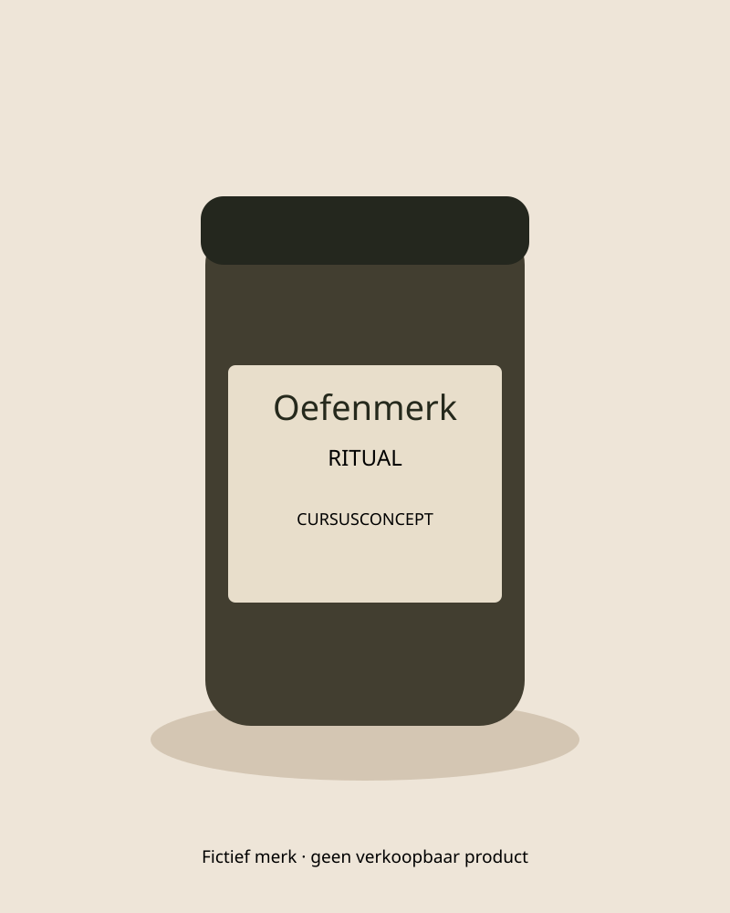

Oefenmerk · cursusconcept
Scroll om de conceptverpakking vanuit een andere hoek te bekijken.

De beweging gebruikt een eigen SVG met CSS-perspectief. Dit is een lokale ontwerpstudie, geen 3D-productmodel of gekopieerde MotionSites-build.
In een echte winkel controleer je inhoud, prijs en interval naast elkaar.